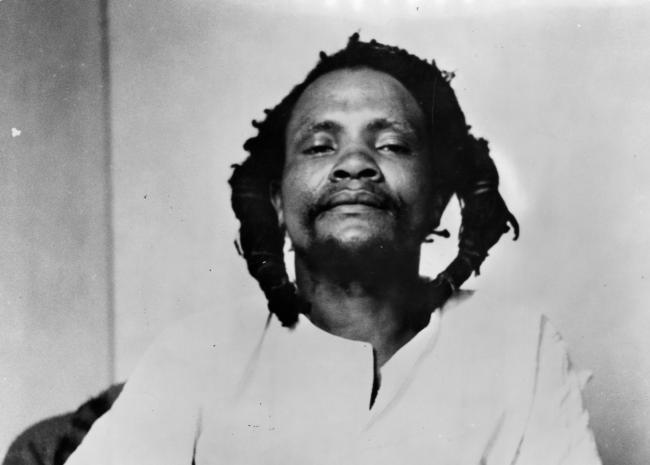

Dedan Kimathi Waciuri
The man who led the armed military struggle against the British colonial regime in Kenya.

Dedan Kimathi, a renowned Kenyan freedom fighter behind the Mau Mau uprising
against the British colonial rule. He continues to inspire generations 6 decades later.
Here's a timeline of Dedan Kimathi's life:
- 1920 - Born in Tetu
- His middle name, Waciuri, means self-reliance
- 1940 - Kimathi enlisted in the British Army, but was discharged after a month, allegedly for drunkenness and persistent violence against his fellow recruits.
- 1947 - He had a short stint working as an untrained teacher
- 1949 - Became an active member of the Kenya African Union and on being banned by the British colonial government, he proceeded to join the Mau Mau movement.
- 1950 - He joined the Kenya Land Freedom Army also known as the MauMau and was in charge of oath administration.
- 1952 - Kimathi quickly rose to become a leader of the movement where he was appointed as a freedom army following the assassination of his counterpart Waruhio Itote.
- 1956 - Kimathi got captured by the British forces. He was put on trial and later sentenced to death.
- A court presided over by Chief Justice O’Connor and with an all-black jury of Kenyans sentenced him to death while he lay in a hospital bed at the General Hospital Nyeri. His appeal was dismissed, and the death sentence upheld.
- 1957 - Despite rampant appeals from local and foreign authorities, Kimathi was eventually executed by hanging and his body buried at an unmarked grave, and his burial site remains unknown to this date. The British Government has never released classified information about his death despite international appeal.